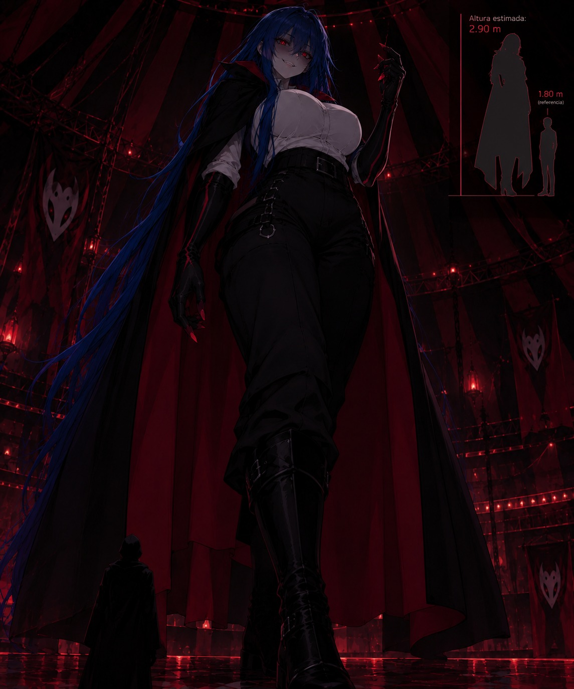

Maestra de la compañía Jen
"Es un Honor que seres de otro universo me vean, pero que curioso que los humanos de su universo sean tan pequeños. de todas formas, en algún momento los reyes de sus reinos ocasionaran una catástrofe... como ese dios ciego e idiota hizo en la tierra de mi universo de origen con su plaga color Olo exactamente en el planeta de mi universo que es el de ustedes, seres inferiores. Y aprecien, al Corazón de la pesadilla, al cual le dejo mi voluntad."
estatura: 2.90m
edad: más de miles de millones de años
reino: mundo de las pesadillas
estado: reemplazara con éxito por su niño para albergar al corazón de las pesadillas
